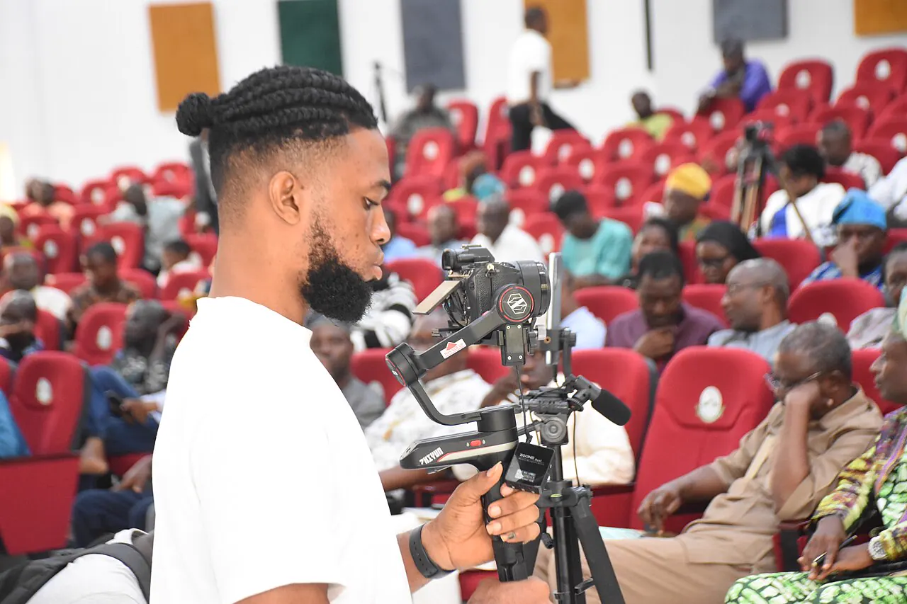
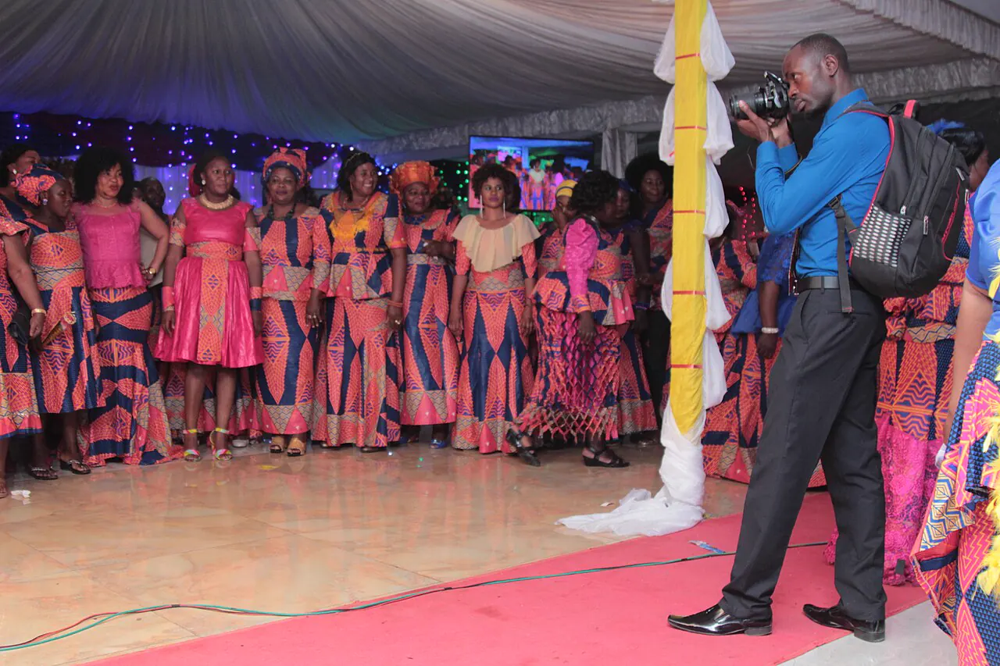
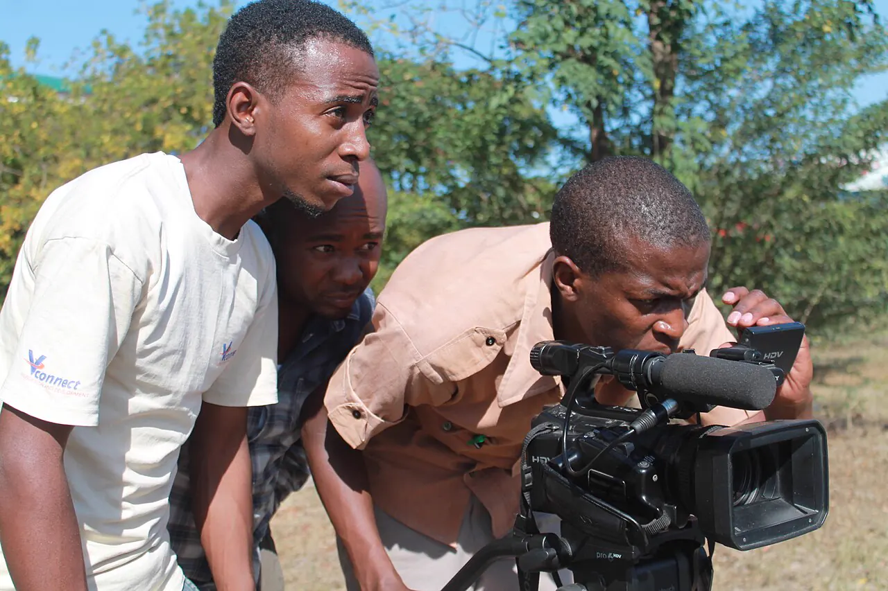
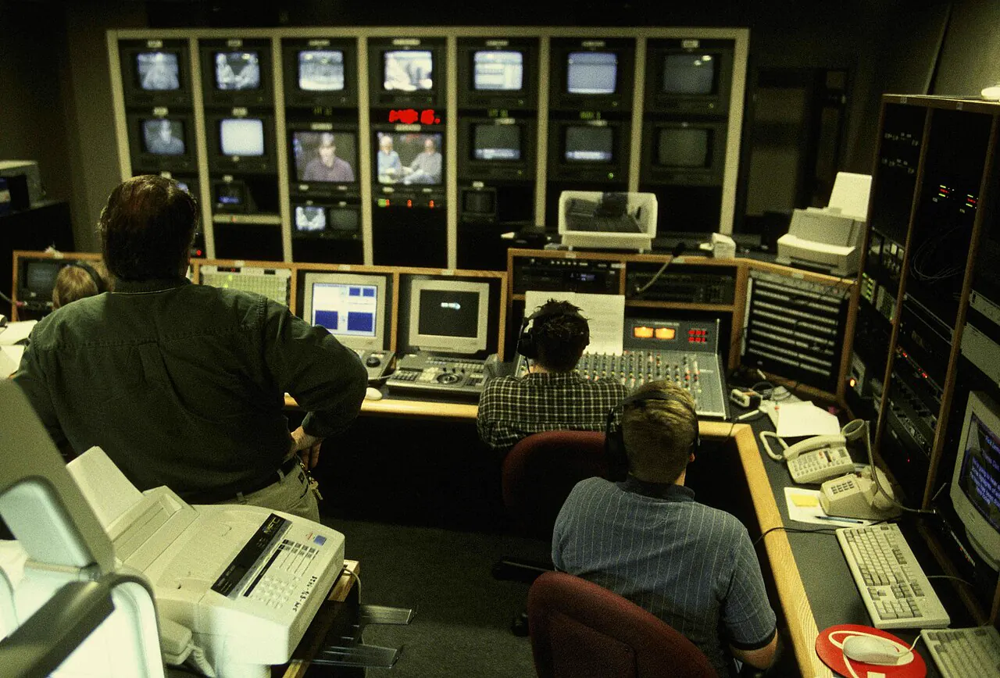
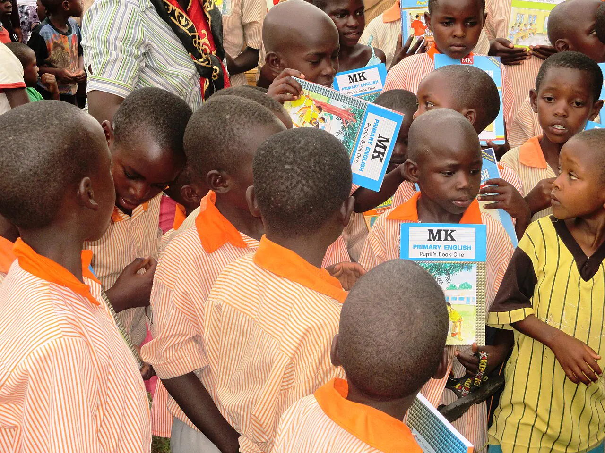
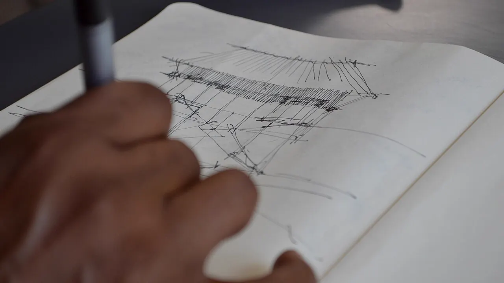
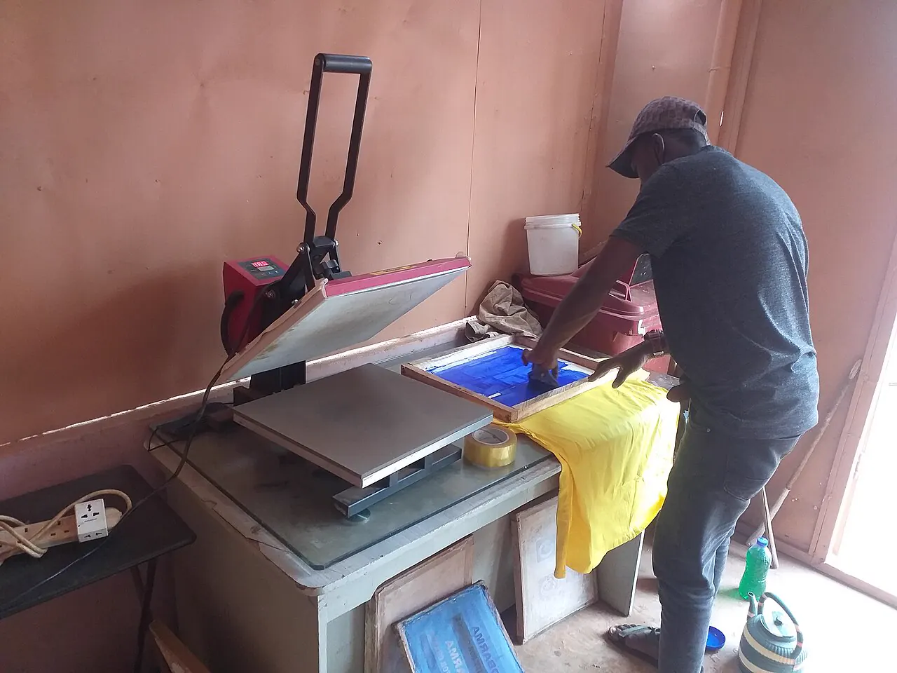
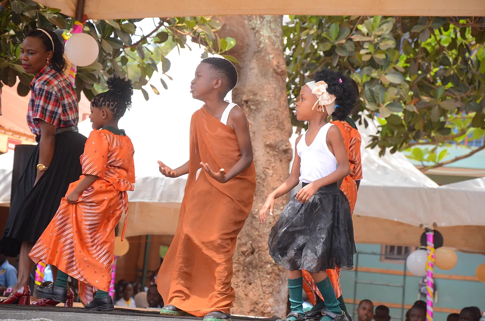
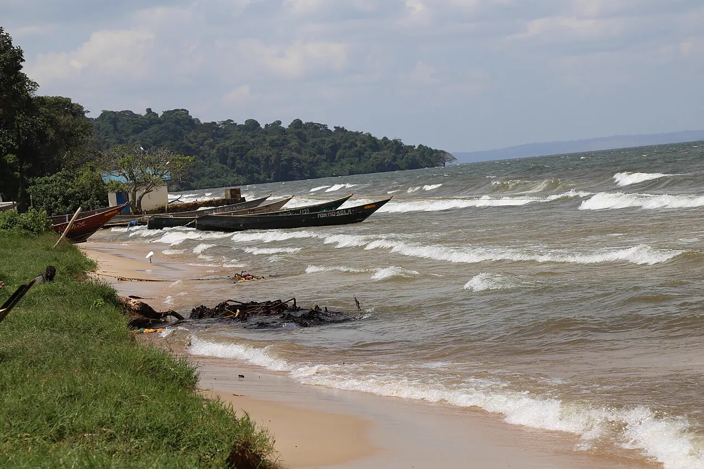
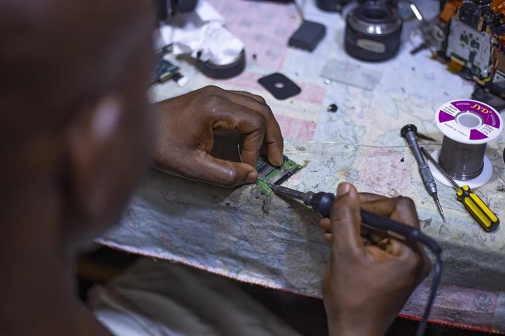

Make your work look as good as it is
Most good organisations are badly photographed. We fix that with films, photographs, livestreams and design for NGOs and brands across East Africa.
What we did last, and when we are free next
There are only so many good camera crews in Kampala on a Saturday. The dates below go first.
- Conference livestreamTwo days, three cameras, streamed to YouTube and FacebookKampala, Nov 2026
- Field film for a schools programmeTwelve minutes, shot over four days on the islandsKalangala, Oct 2026
- Next open livestream datesEvents, launches and conferences in and around KampalaFrom 8 Dec 2026

Six ways to be taken seriously
One crew plans, shoots, streams and designs. Fewer handovers mean fewer things lost in them, and one number to call when it matters.
- Photography
The only part of the event that outlives the catering. We make it look worth attending.
- Filmmaking
A report gets skimmed; a three-minute film gets forwarded. We make the one people forward.
- Content creation
Posting once is a whisper. Posting every week is a reputation. We plan the series.
- Livestreaming
An audience forgives a slow speaker, never a frozen screen. We bring the backup for the backup.
- Website design
The shop window people visit at midnight. Fast, and looking like you mean it.
- Graphic design
Consistency looks expensive. One look across poster, page and film makes a small team feel big.






Proof from across East Africa
Events in the city, stories on location, and the print that carries a campaign home.
A cultural day, filmed
Three minutes for the people who were there, and a short for those who wish they had been.

Field stories on Lake Victoria
Crew, kit and power go by boat. The hard-to-reach stories are the ones donors remember.

Campaign shirts and banners
Printed from the same files as the film, so the campaign looks like one idea, not six suppliers.
Five fields. No sales call unless you want one
Tell us what you need. We reply within one working day, by email or on WhatsApp if you prefer.
- 1. You send the briefWhat, where, when, and who you need to convince
- 2. We send a plan and a quoteCrew, days on location, delivery dates, and no surprises
- 3. We shoot, stream and deliverEdits in two review rounds, files in every size you need
